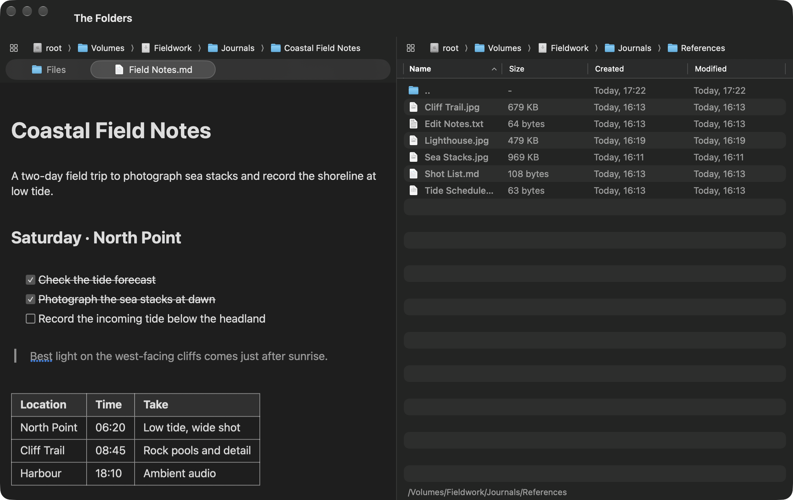

File and folder sizes
Check file sizes and folder totals. The Folders detects logs, caches, and build artifacts and shows how much space each category takes up.

A two-pane macOS file manager for developers. Browse project folders, edit Markdown, and see what’s taking up space.

The Folders for macOS · Waymark workspace
Check file sizes and folder totals. The Folders detects logs, caches, and build artifacts and shows how much space each category takes up.
Read and edit README files, changelogs, and project notes in one formatted Markdown preview. See the markup at the cursor and follow links to local files.

Crop, resize, rotate, or flip an image right in its preview. Save your edits or export a copy in a different format.

Play a folder of local tracks as a playlist. See the album artwork, skip or shuffle tracks, and control playback from the toolbar as you browse.

Keep source and build output side by side, and drag files between the panes.
Preview source files in either pane and keep several files or folders open in tabs.
Customize settings and add the context menu commands you use in your workflow.
Built for macOS for a fast, native experience that stays light on your system.
Get the latest version of The Folders for macOS.